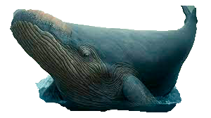
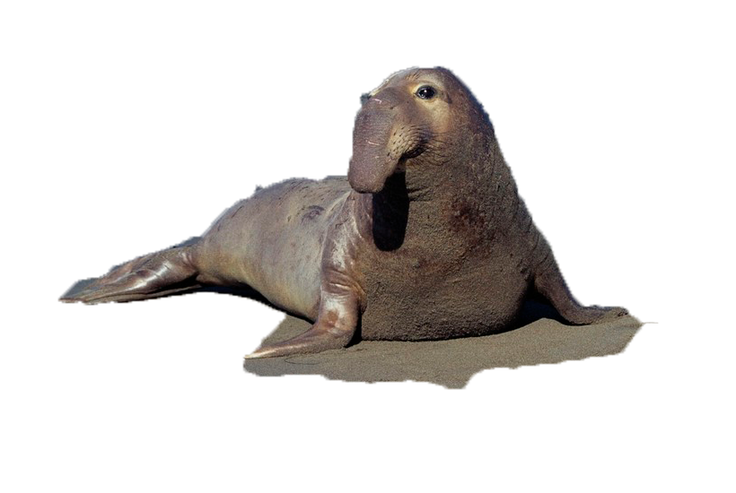

Согласно предварительным расчетам, каждый позвонок этого гиганта весил свыше 100 кг, а длина его ребер составляла 1,4 метра. Исследователи экстраполировали данные и подсчитали, что средняя масса тела этой особи могла составлять 180 тонн. При этом ученые не уверены в своих выводах, так как назвать точную массу тела древнего кита сложно, ведь они не нашли верхнюю часть его скелета.

Род млекопитающих семейства настоящих тюленей (Phocidae), включающий наиболее крупных представителей отряда хищных млекопитающих. Своим названием они обязаны хоботообразному носу у самцов и большим габаритам. Несмотря на то, что морские слоны относятся к настоящим тюленям, по своему поведению и некоторым другим признакам они более напоминают ушастых тюленей.